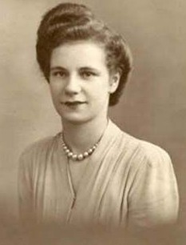

Albin Carl Norlander.

Född 1922 i Alberta, Kanada 3 .
Död 2 okt 1999 i Edmonton, Alberta, Kanada 3 .
|
Född
omkring 1925
1
.
Död 23 aug 2021 i Edmonton, Alberta, Kanada |
 |
|
Patricia Margaret Norlander f James
Född omkring 1925 1 . Död 23 aug 2021 i Edmonton, Alberta, Kanada |
|||
|
Gift
.. apr 1945
i Rother Valley, West Riding, Yorkshire, Storbritannien
2
.
Albin Carl Norlander.
Född 1922 i Alberta, Kanada 3 . Död 2 okt 1999 i Edmonton, Alberta, Kanada 3 . |
 Född
omkring 1957
i Edmonton, Alberta, Kanada
4
.
Född
omkring 1957
i Edmonton, Alberta, Kanada
4
.
Framställd 12 aug 2026 med hjälp av Disgen version 2025.